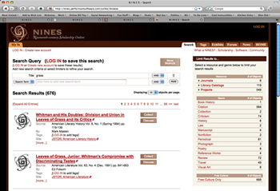

Collex

Collex is an open-source collections- and exhibits-builder designed to aid humanities scholars working in digital collections or within federated research environments like NINES. Collex operates under the assumption that the best paths through a complex digital resource are those forged by use and interpretation.
A Collex approach works to assist scholars in recording, sharing, and building on the interpretive purposes to which they put their online teaching and research environments. Collex leverages current developments in folksonomy and semantic-web technology to perform data mining operations and enhance knowledge discovery.
This leads scholars and students to see connections among digital objects, based on the contexts into which those objects have been placed (implicitly or explicitly) by past scholarly activity in the system.
Users of collex in NINES can:
- collect, tag, analyze, and annotate trusted objects (digital texts and images vetted for scholarly integrity);
- without any special technical training, produce interlinked online exhibits using a flexible and professional design template;
- share collections and exhibits with students and colleagues.
18thConnect
The latest implementation of Collex as a generalized, open-source tool for aggregating scholarly content is by 18thConnect. This collaborative initiative is headed by scholars at the Universities of Illinois, Miami-Ohio, and Virginia in an effort to develop a robust infrastructure for providing a comprehensive research environment for scholars working on the literature, history, the fine arts, and philosophy of the long eighteenth century (1660-1800).
FURTHER READING
A detailed description of Collex, written by its creator, Dr. Bethany Nowviskie, is available here (PDF, 119kb)
Outside reviews of Collex and NINES are available from the Transliteracies Project and by l'Observatoire Critique.